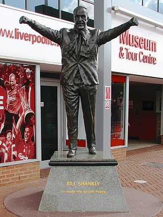

Club History

Liverpool were founded following a dispute between the Everton committee and John Houlding, club president and owner of the land at Anfield. After eight years at the stadium, Everton relocated across Stanley Park to their new stadium of Goodison Park in 1892, and Houlding founded Liverpool F.C. to play at Anfield. Originally named "Everton F.C. and Athletic Grounds Ltd" (Everton Athletic for short), the club became Liverpool F.C. in March 1892 and gained official recognition three months later, after The Football Association refused to recognise the club as Everton

Liverpool reached their first FA Cup final in 1914, losing 1–0 to Burnley. It won consecutive league championships in 1922 and 1923, but did not win another trophy until the 1946–47 season, when the club won the First Division for a fifth time under the control of ex-West Ham United centre half George Kay. Liverpool suffered its second Cup Final defeat in 1950, playing against Arsenal. The club was relegated to the Second Division in the 1953–54 season. Soon after Liverpool lost 2–1 to non-league Worcester City in the 1958–59 FA Cup, Bill Shankly was appointed manager. Upon his arrival he released 24 players and converted a boot storage room at Anfield into a room where the coaches could discuss strategy; here, Shankly and other "Boot Room" members Joe Fagan, Reuben Bennett, and Bob Paisley began reshaping the team.

Houllier was replaced by Rafael Benítez at the end of the 2003–04 season. Despite finishing fifth in Benítez's first season, Liverpool won the 2004–05 UEFA Champions League, beating AC Milan 3–2 in a penalty shootout after the match ended with a score of 3–3. The following season, Liverpool finished third in the Premier League and won the FA Cup, beating West Ham United in a penalty shootout after the match finished 3–3. American businessmen George Gillett and Tom Hicks became the owners of the club during the 2006–07 season, in a deal which valued the club and its outstanding debts at £218.9 million. The club reached the 2007 UEFA Champions League final against Milan, as it had in 2005, but lost 2–1. During the 2008–09 season Liverpool achieved 86 points, its then-highest Premier League points total, prior to the record-breaking 2018–19 season, and finished as runners up to Manchester United.

Rodgers was replaced by Jürgen Klopp. Liverpool reached the finals of the Football League Cup and UEFA Europa League in Klopp's first season, finishing as runner-up in both competitions. The club finished second in the 2018–19 season with 97 points – surpassing the 86 points gained during the 2008–09 season and a points record for a non-title winning side – and only one loss. Klopp took Liverpool to successive UEFA Champions League finals in 2018 and 2019, with the club defeating Tottenham Hotspur 2–0 to win the latter. Liverpool beat Flamengo of Brazil in the final 1–0 to win the FIFA Club World Cup for the first time. The following season, Liverpool won their first top-flight league title in thirty years. The club set multiple records in the season; they won the league with seven games remaining, the earliest any team has ever won the title, reaching a club record 99 points, and won a joint-record 32 games in a top-flight season. The 2021–22 season saw the club win the domestic cup double, the FA Cup and the League Cup. In January 2024, Klopp announced that he would leave the club at the end of the season, and he won his final trophy with the club, the League Cup, the following month.